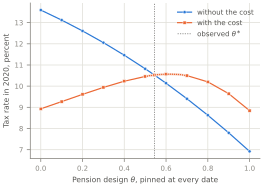

import {counterfactuals, control, ROWS_CHOSEN, RHO, CHOSEN_OUTCOMES} from "./assets/oa.js"
esc = FileAttachment("_generated/data/ESC_Counterfactuals.csv").csv({typed: true})
usObserved = esc.find(d => d.host === "US" && d.outcome === "theta" && d.reading === "pinned").baseline
viewof c3Out = control("radio", CHOSEN_OUTCOMES, {key: "outcome", label: "Outcome", value: "theta"})
counterfactuals(esc.filter(d => d.source === "main" && d.host === "US"),
{rows: ROWS_CHOSEN, series: RHO, outcome: c3Out, mode: "chosen", width,
observed: {"The paper's cost": usObserved, "A cost on the design": usObserved},
facets: [{label: "The paper's cost", filter: d => d.spec === "size"},
{label: "A cost on the design", filter: d => d.spec === "scale"}]})C2. The cost of redistribution
Section 7.1 of the paper adds a deadweight cost of redistribution because without one the electorate chooses flat benefits. This page shows that corner first, under the two timings of the choice the paper examines, then sets a second specification of the cost against the paper’s and reads the U.S. tax rate against a pinned design, and closes with the numbers behind the paper’s decompositions of the design choice and of the size of the cost.
Without the cost: the corner
Appendix C.1 of the paper shows that, without the cost of redistribution and at the U.S. calibration, each of the two timings it examines puts the design at the Beveridgean corner. A design chosen together with the tax rate re-splits benefits that current retirees have already earned, and under log preferences a more earnings-related one lowers the political objective as long as the propensity to vote rises with income by proportionally less than consumption in retirement. A design chosen one period ahead weighs the young’s stake in redistribution against the gain of a more earnings-related system, which raises the labor supply on which benefits are levied.
Table C2.1 reports the numerical checks, one block per timing. Chosen with the tax, the design’s marginal effect on the political objective is negative at every date and every design at each IES, so the design is the Beveridgean corner. The corner would fail only if the weight of the high-income group relative to the low-income one exceeded a critical ratio, which is above the observed ratio at every IES and every date. The critical ratio falls as the IES rises, and along the projection as the system grows; at its lowest, at the highest IES late in the projection, it remains above the observed ratio. Chosen one period ahead under log preferences, the design is again the Beveridgean corner.
\(\cdot\)
| High- to low-income weight | |||||
|---|---|---|---|---|---|
| Timing | \(\rho\) | \(\theta\) chosen | Observed | Critical, 2020 | Critical, lowest |
| With the tax | 0.5 | 0.000 | 1.61 | 12.22 | 9.95 |
| 1.0 | 0.000 | 1.61 | 3.50 | 3.19 | |
| 2.0 | 0.000 | 1.61 | 1.87 | 1.80 | |
| One period ahead | 1.0 | 0.000 | – | – | – |
Note: No cost of redistribution; \(\rho = 1\) is log preferences. With the tax: the sign of the derivative (15) of the paper on a grid of \(\theta_t\) on [0,1], at the calibrated equilibrium of every date from 1990 to 2170; it is negative at every date and design, so the choice is the corner \(\theta_t = 0\). High- to low-income weight: the ratio of the two groups’ weights in the political objective; observed, the ratio of their propensities to vote in the calibration; critical, the ratio at which the derivative first turns non-negative at some design as the weights rise more steeply with income, in 2020 and at its lowest over those dates. It is the same, to the digits shown, whether the weights are the observed propensities raised to a common power or a power of relative income. One period ahead: \(\theta_{2020}\), the design the electorate of 1990 chooses by (C.1) of the paper, on the path where the choice binds from the first period.
Data: escCalibration.csv · C5_criticalTurnout.csv ·
Source
Reads:
data/USMain_test.xlsxresults/esc/escCalibration.csvresults/numerical/C5_criticalTurnout.csv
Built by tablesOA.escTiming (python/paper) at commit 5fcff38. Rebuild: python python/paper/build.py --no-copy --only ESC_Timing.
A cost on the design
Under the paper’s cost of redistribution, which lifts the design off that corner, the share of revenue lost grows with the square of the size of the system and with the dispersion of relative incomes, so nothing is lost when the design redistributes nothing (appendix C.2). The alternative attaches the cost to the design itself, \(f(\theta) = \phi + (1-\phi)\theta^{p}\), with \(\phi\) imposed and \(p\) calibrated, as λ is, so that the U.S. electorate re-elects its observed design. It charges a flat benefit whatever that benefit redistributes. Table C2.2 gives the two calibrations under log preferences, the only IES at which the cost on the design is calibrated. At the observed design the cost on the design loses a larger share of revenue than the paper’s, and at a flat benefit it loses the share \(1-\phi\), far more.
\(\cdot\)
| Cost | Parameter | \(1 - f(\theta^{\ast})\) | \(1 - f(0)\) |
|---|---|---|---|
| The paper’s cost | \(\lambda = 41.45\) | 2.1% | 9.5% |
| The cost on the design | \(p = 0.291\) | 8.1% | 50.0% |
Note: Log preferences (\(\rho = 1\)). The paper’s cost is that of equation (17) of the paper, as in table 4 of the paper; the cost on the design is \(f(\theta) = \phi + (1-\phi)\theta^{p}\) with \(\phi = 0.5\) imposed. Each parameter is calibrated so that the U.S. electorate re-elects its observed design, \(\theta^{\ast} = 0.544\), in 2020. \(1 - f(\theta^{\ast})\) and \(1 - f(0)\) are the shares of revenue lost in 2020 at the observed design and at a flat benefit, both at the 2020 tax rate.
Data: escCalibration.csv ·
Source
Reads:
data/USMain_test.xlsxresults/esc/escCalibration.csv
Built by tablesOA.escCostCalibration (python/paper) at commit 5fcff38. Rebuild: python python/paper/build.py --no-copy --only ESC_CostCalibration.
Under log preferences acute ageing raises the chosen design by about a seventh as much under the cost on the design as under the paper’s, since the cost on the design does not grow with the tax rate that ageing raises. France’s voting patterns move the design further toward flat benefits. France’s income distribution compresses the redistributive stakes but leaves the cost in place, and it takes the design to the Bismarckian corner.
\(\cdot\)
Figure C2.1. The counterfactuals under the two cost specifications, U.S.
\(\cdot\)
Note: The U.S. under the paper’s cost, calibrated at each \(\rho\), and under a cost on the design, calibrated under log preferences (\(\rho = 1\)) only. An open marker is the reading with the design pinned at the observed value, a filled one the reading with the design chosen; the design is a level, the other outcomes the change against the baseline of the same reading and \(\rho\), in 2020. The vertical line in the design panel is the observed design.
Data: the figure’s data (csv) ·
Source
Reads:
data/USMain_test.xlsxresults/esc/escExperiments.csvresults/esc/escXiRobustness.csvresults/paper/usCalibrationSummary.csv
Built by siteData.escCounterfactuals (python/paper) at commit 5fcff38. Rebuild: python python/paper/build.py --no-copy --only ESC_Counterfactuals.
The tax against a pinned design
The figure pins the U.S. design at one value on the whole path, with the calibration held at the observed design, and reads the tax rate of 2020 without the cost of redistribution and with the paper’s cost. Both lines pass through the calibrated tax rate at the observed design. Without the cost the tax rate falls as the design becomes more Bismarckian, the comparative static of section 3 of the paper: a higher θ shifts benefits from low-income retirees, who with their higher marginal utility weigh more in the political objective, to high-income ones. With the cost the tax rate is hump-shaped in the design, with its peak a little above the observed design, which the electorate re-elects. At flatter designs a more Bismarckian one raises the tax rate, since less of the revenue is lost; at more Bismarckian designs it lowers the tax rate, as without the cost. Section 7 of the paper opens with this shape.
\(\cdot\)
Figure C2.2. The U.S. tax rate against a design pinned on the whole path, with and without the cost

Note: The U.S. in 2020 under log preferences (\(\rho = 1\)), with the design pinned at the same \(\theta\) at every date and the economy started from its own steady state; \(\beta\), \(\omega\) and \(X\) stay at their calibration at the observed \(\theta^{\ast} = 0.544\) (dashed line), without the cost as in section 6 of the paper and with the paper’s cost at \(\lambda = 41.45\) (table 4 of the paper). Without the cost the tax rate falls with the design, from 13.59% at \(\theta = 0\) to 6.92% at \(\theta = 1\) (−6.67 p.p.). With the cost it is 8.93% at \(\theta = 0\), peaks at 10.57% at \(\theta = 0.62\), against 10.52% at \(\theta^{\ast}\), and falls to 8.84% at \(\theta = 1\). The designs are \(\theta = 0, 0.1, \dots, 1\), \(\theta^{\ast}\) and, around the peak, steps of 0.01.
Data: oecd26_theta.csv · US_rhoGridCommonX.csv · escCalibration.csv · escTauTheta.csv ·
Source
Reads:
data/USMain_test.xlsxdata/oecd26_theta.csvresults/calibration/US_rhoGridCommonX.csvresults/esc/escCalibration.csvresults/esc/escTauTheta.csv
Built by figuresOA.escTauTheta (python/paper) at commit 5fcff38. Rebuild: python python/paper/build.py --no-copy --only US_ESC_TauTheta.
The numbers behind the paper’s decompositions
Table C2.3 gives the numbers behind three statements the paper makes in words. Panel A splits the design condition of the U.S. electorate under log preferences at the design it chooses (section 7.1): with the share of revenue lost and the anticipated tax held, the political objective pulls the design towards flat benefits, and two routes offset that pull in nearly equal parts, the saving on the loss, since a more earnings-related design dissipates less of the revenue that pays the young, and the response of the anticipated tax. Panel B imposes France’s income distribution on the U.S. in three steps (section 7.2): first everywhere but in the cost, then in the dispersion of relative incomes in the cost, and last in the tax rate in the cost. The first step raises the design at each IES, most at the highest; the other two lower it, and the dispersion in the cost lowers it most at the lowest IES, where λ is largest. The split depends on the order of the steps, and the last row imposes the dispersion in the cost alone. Panel C sets the calibrated λ against the participation and taxable-income elasticities of the literature (appendix C.2): through the local elasticity of the base at the wedge in place, λ is a multiple of what those elasticities imply at each IES, a multiple that falls as the IES rises. Charging the budget with the fiscal externality of the response instead scales the loss up, so that the calibrated λ implies a smaller elasticity and a smaller share of earnings outside the base.
\(\cdot\)
| \(\rho = 0.5\) | \(\rho = 1\) | \(\rho = 2\) | |
|---|---|---|---|
| A. The design condition at the U.S. choice, log preferences | |||
| The pull: the design, the share lost and the tax held | – | −0.0270 | – |
| The saving on the loss | – | +0.0130 | – |
| The response of the anticipated tax | – | +0.0140 | – |
| Sum: the design condition | – | 0.0000 | – |
| Share of the offset: the saving on the loss | – | 48% | – |
| Share of the offset: the response of the tax | – | 52% | – |
| B. France’s income distribution in three steps, the change in \(\theta_{2020}\) | |||
| Everywhere but in the cost | +0.207 | +0.243 | +0.371 |
| The dispersion in the cost | −0.213 | −0.185 | −0.062 |
| The tax rate in the cost | −0.066 | −0.068 | −0.016 |
| Total | −0.072 | −0.010 | +0.293 |
| The dispersion in the cost alone | – | −0.253 | – |
| C. The size of \(\lambda\), 2020 | |||
| \(\pi = \Pi/R\) | 0.556 | 0.554 | 0.552 |
| The wedge in place, \(\bar{t}\) | 0.047 | 0.047 | 0.047 |
| \(\lambda\) | 91.57 | 41.45 | 8.94 |
| The local elasticity, \(\varepsilon(\bar{t})\) | 8.66 | 3.94 | 0.85 |
| \(\lambda\) at \(\varepsilon = 0.1\) | 1.06 | 1.05 | 1.05 |
| \(\lambda\) at \(\varepsilon = 0.4\) | 4.23 | 4.21 | 4.20 |
| \(\lambda\) as a multiple of that at \(\varepsilon = 0.4\) | 21.7 | 9.8 | 2.1 |
| \(\lambda\) as a multiple of that at \(\varepsilon = 0.1\) | 86.6 | 39.4 | 8.5 |
| Earnings outside the base | 20.2% | 9.2% | 2.0% |
| Fiscal externality: \(\varepsilon(\bar{t})\) | 5.78 | 2.62 | 0.57 |
| Fiscal externality: earnings outside the base | 13.5% | 6.2% | 1.3% |
Note: \(\rho = 1\) is log preferences. Panel A: the derivative of the political objective of the electorate of 1990 in the design it chooses for 2020, equation (C.1) of the paper, at the U.S. choice \(\theta_{2020} = 0.544\), by route: the design with the share of revenue lost and the anticipated tax held, which pulls the design towards flat benefits; the dependence of the share lost on the design (equation (C.10) of the paper), the saving on the loss; and the response of the anticipated tax \(\mathcal{T}_{2020}(\theta_{2020})\). The routes sum to zero at the choice; each share is one of the last two routes over their sum, which offsets the pull. Panel B: \(\theta_{2020}\) on the path where the choice binds from the first period, as France’s income distribution is imposed on the U.S., first everywhere but in the cost, whose share of revenue lost at each design is held at its U.S. value, then in the dispersion of relative incomes \(\tilde{V}\) in the cost, and last in the tax rate in the cost; the total is the response to France’s income distribution in figure 6 of the paper, and the split depends on the order of the steps. Under CRRA preferences the share held is met to a relative gap of at most 0.15%. The dispersion in the cost alone is the U.S. with France’s \(\tilde{V}\) in the cost, computed under log preferences only. Panel C: the magnitudes of appendix C.2 of the paper, \(\pi = \Pi/R\) on the path without the cost, \(\bar{t} = \tau(1-\pi)\) the wedge in place of equation (C.3) of the paper at the calibrated tax rate, \(\lambda\) of table 4 of the paper, and \(\varepsilon(\bar{t}) = \kappa\bar{t} = \lambda\tau/(2\pi)\) the local elasticity of the base under \(\lambda = 2\kappa\pi(1-\pi)\). \(\lambda\) at \(\varepsilon\) is the cost parameter that a local elasticity \(\varepsilon\) implies, \(2\pi\varepsilon/\tau\), at the ends of the range of participation and taxable-income elasticities (Chetty et al. 2011; Saez et al. 2012), and the multiples are the calibrated \(\lambda\) over it. Earnings outside the base: the share \(\frac{1}{2}\kappa\bar{t}^{2}\) that the wedge in place keeps outside. Fiscal externality: the budget charged with the participation tax of every unit of base that leaves, \(\lambda = 3\kappa\pi(1-\pi)\).
Data: escCalibration.csv · escCalibrationCRRA.csv · escExperiments.csv · C5_designDecomp.csv · C5_lambdaElasticity.csv ·
Source
Reads:
data/USMain_test.xlsxresults/esc/escCalibration.csvresults/esc/escCalibrationCRRA.csvresults/esc/escExperiments.csvresults/numerical/C5_designDecomp.csvresults/numerical/C5_designDecompCRRA_rho*.csv(2 files)results/numerical/C5_lambdaElasticity.csv
Built by tablesOA.escDecompositions (python/paper) at commit 5fcff38. Rebuild: python python/paper/build.py --no-copy --only ESC_Decompositions.